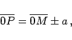
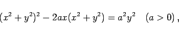
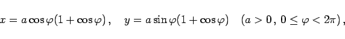
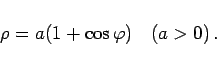
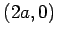
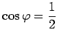
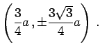
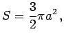
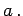
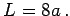

Die Kardioide kann auf zweierlei Weise definiert werden:
|  | (2.225) |
wobei a der Durchmesser des Kreises ist, oder
Die Gleichung lautet in kartesischen Koordinaten, in Parameterform sowie in Polarkoordinaten:
|  | (2.226a) |
|  | (2.226b) |
|  | (2.226c) |
Der Koordinatenursprung ist ein Rückkehrpunkt. Der Scheitel A liegt bei ; Maximum C und Minimum D liegen bei  mit den Koordinaten 
Der Flächeninhalt beträgt  d.h. die sechsfache Fläche des Kreises mit dem Durchmesser  Die Kurvenlänge ist 